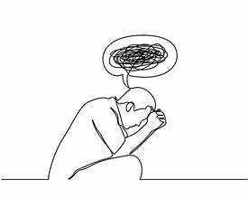

"Normal"
Sakthi Mohanraji“Everybody knows there is no such thing as normal. There is no black-and-white definition of normal. Normal is subjective. There’s only a messy, inconsistent, silly, hopeful version of how we feel most at home in our lives.” ― Tori Spelling
One of the biggest problems with addressing issues regarding mental health, if not the biggest, is dealing with the stigma that surrounds it. Many people don’t like change. It can be challenging to venture out and stumble onto new territory, not knowing what to think or feel. A lot of us would much rather revel in the comfort and safety of what we already know, to be surrounded by what we consider to be normal. So in a way, it makes sense that we live in a world that tries to confine people to other people’s expectations, because doing so doesn’t make way for a lot of change at all. In today’s stigmatized world, if we were to like something that many people don’t, it’s considered “weird”, so less people do it. And if you fit the status quo, then you’re in the green; you’re normal. But it makes me wonder, what’s normal? It’s funny, a lot of people don’t even think of that question anymore. There aren’t many that say, “I’m going to do this for myself” or “it’s okay if no one else likes it, I do”, because I think we all have basically conditioned ourselves to “fit”, to be a piece of some huge puzzle of “normalcy” that people have conjured up in their imaginations. But what if you don’t want to fit?
The few people that decided to stick with their own expectations were either seen as enemies or celebrated as heroes, but most tend to shy away from doing what they want because they're worried about what others would think. It’s like choosing to be forced into a container, regardless of whether or not we fit in it, just to feel accepted. And most of the time, it’s all we’ve ever known. From childhood we’ve watched many people in our lives shy away from change and individuality and we’ve followed in their footsteps, not knowing much else. But we’re so much more than what others want us to be. We all have things we love and hate, that we need to do and want to have. We exist in unique colors, not meant to be contained. But it’s like we’ve forgotten that. Going back to mental health stigma, it is the whole battle between change and “normality” again. There’s difficulty talking about it because in a lot of situations, it is seen as some sort of black mark. For years, mental health issues have been seen as something to be ashamed about, because the people struggling with these issues are “not like the rest”. Not only that, but since most people do not understand these issues well, they can also be seen as too much change. Fear of the unknown can cause even more segregation. And because of that, many people become isolated. They get bullied. They get judged. They are treated differently from other people, even if they are equally as capable of doing anything, just like everyone around them. Just because someone has been dealing with something different does not, and should not, ever mean that they do not belong. That they are not really “normal”. The first step to ending the stigma is learning to accept. To be able to see that having a problem does not make someone stupid or strange. To be able to provide a safe space with absolutely no judgement. The bottom line: real issues need real conversation. The truth is that comfortable conversations about mental health issues is what actually needs to become normal in the world. It needs to be okay to tell someone that we’re not alright without having to worry about being seen differently. It’ll definitely take time for all of this to happen, but every single one of us can help contribute towards this goal by accepting just a little bit more than we already do. Embrace change, even if it’s frightening at first, because you’ll only learn more from what you discover.
Men's Mental Health
Sakthi MohanrajiDid you know that one out of every four men are affected by mental health issues? There’s a ridiculous stereotype that men shouldn’t show their pain, that sharing their worries is “unmanly”. For decades, men have followed these societal norms; they’ve downplayed their symptoms and have hesitated to talk, even to their loved ones. And as a society, we’ve assumed that men don’t typically have as many mental health issues as others do. But the numbers don’t lie: According to Forbes, nearly 75% of all suicides in 2017 were male. Mental Health America has reported that 6 million more men are affected and struggle with depression every single year. And as stated by Healthline, “The National Institute on Alcohol Abuse and Alcoholism puts the annual number of men dying due to alcohol-related causes at 62,000, compared to 26,000 women.”
| Year | Avg. % of men experiencing mental health struggles |
|---|---|
| 2020 | 15.8% |
| 2021 | 18.1% |
| 2022 | 19.8% |

This deserves to be said; no matter what you’ve heard before, this is the honest truth: asking for help is not a sign of weakness. You don’t have to be strong all the time. It’s okay to need a breather, to want to rant and cry, to take time for yourself. You’re never going to become weaker for reaching out, so you don’t have to tough it out, we promise. You’re strong, no matter what. Everyone has valid feelings, no matter your gender, race, sexuality, or any other differences between us. We’re all human, and that’s all that counts. And one more truth; every single one of us can ask for help. There’s no shame in it, and doing so will only make you stronger than you already are. Destigmatizing mental issues for men is a huge and extremely important task, and in order to do that, we need to keep fighting so that no person ever feels that they can’t raise their voice.